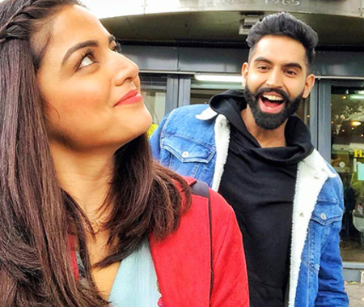

Parmish Verma
It's My Choice

Parmish Verma is an Indian singer, rapper, and director in Punjabi film industry. He is none other than one of the most eminent personalities in the world. In this movie “Dil Diyan Gallan” Parmish Verma is playing the role of an international student named Kulwant Singh aka Laadi in London, who fell in love with the social media influencer named Waqima Gabbi aka Natasha Waraich. who went to London to shoot a vlog, who had a million followers. They met in college. Initially they got on the wrong foot but eventually they fell in love with each other.
Laadi was quite of a person who just wanted to live his life peacefully and successfully without any showoff and fakeness. He was truly kind towards everyone, honest and positive. He always wanted to live in the moments without capturing it. He do not even take his own pictures.In this movie Parmish loves to sing and cooking also. he is a really funny guy for Natasha Waraich , who will always keep her happy in her entire life.

Laadi was pursuing the culinary and hotel management program in the college. He knew everything about cooking. He also knew photography. In fact, Laadi is the one who did shoot the vlogs and clicked the pictures of Natasha Waraich in the movie. he has that magical personality that can make any sad person laugh and joyful.
Gaurav Kakkar aka “Fateh” (Natasha's boyfriend), Natasha Waraich, Chandan gill, Anoop karir, Dimple Bhullar& Angel.
Not every moment should be shared with the world, some should be kept private.
